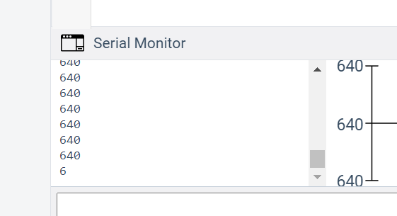
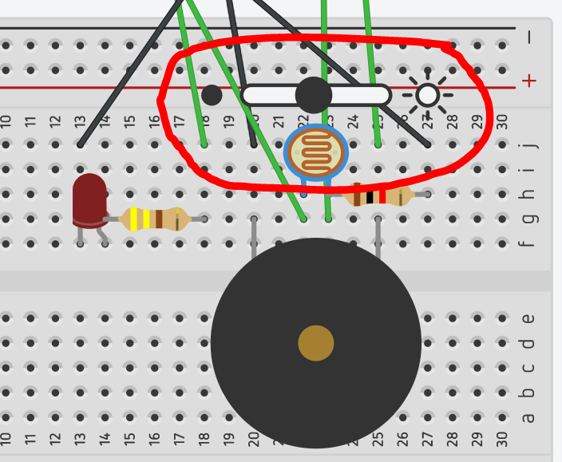
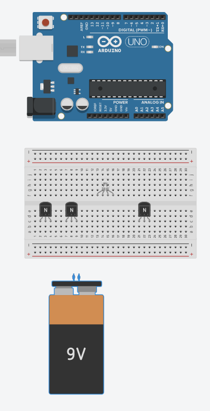

Internet of Things-a new industry? Note: do not only rely on the book for the answer. Consult LinkedIn Learning and Wikipedia.
(50) 1. Reflect on what you have learned in the networking course-the concepts and also the experience of working with and setting up IoT devices like the Raspberry Pi. Think about this in terms of any industry-banking, finance, manufacturing, healthcare... Is the Internet of Things a 'new industry' or is it going to be a 'new way' to disrupt a lot of existing industires? Are organizations ready for the Internet of Things? Are you ready for IoT?
Read Hands-On Project 13-1 Create a free Tinkercad account at https://www.tinkercad.com Create the circuit as described and make sure it works. After finishing step 10, go back to step 7 and modify the circuit as described so that the exclamation point does not appear next to the LED due to excessive current. Experiment with placing various resistors in the circuit.
(50) 2. After resolving the excessive current problem, make a screenshot showing the modified circuit.
Save the screen shot as "Ex1" in your ' ' folder. You will be combining screen shots from several exercises at the end of this assignment, just as you did in Formative00-PDF File Creation.
Do Hands-On Project 13-2 Note how the tone changes as you change the tone frequency in step 7. Reflect on the addition of the piezo buzzer to the circuit design.
(50) 3. How does adding a sensor or actuator that affects other senses improve the design of the circuit? Consider uses of this circuit in the design of a product like an alarm clock or a warning device.
Do Hands-On Project 13-3 Below is the code that is needed for step 5.
// C++ code // int dacValue=0; void setup() { Serial.begin(9600); pinMode(4,OUTPUT); pinMode(13, OUTPUT); pinMode(A1, INPUT); } void loop() { dacValue= analogRead(A1); Serial.println(dacValue); if(dacValue >= 650) { tone(4,2000); digitalWrite(13, HIGH); } else { digitalWrite(13, LOW); noTone(4); } }
In step 6, the Serial Monitor is available when the code window is open, click 'Serial Monitor' in the bottom right to open or close it. 
In step 6 and 7, please realize that you first start the simulation, then click the photoresistor for the slider to appear: 
Reflect on the author's comments in step 8. Simple circuits like the one in this project can automate hundreds or thousands of daily tasks, reducing the need for human action. Furthermore, numerous factory and industrial processes can be controlled with this technology.
Review the concept of the 'Smart Factory'.
(100) 4. Briefly state a benefit of IoT technology in a 'Smart Factory'.r />
Use Tinkercad to create a circuit to control an RGB light. Below is an image of the components needed. The RGB light has four inputs- one ground, and one each for controlling the Red, Green and Blue light. You will need several pieces of another component. 
Hint-read this RGB LED strips guide from Adafruit.
Wire up the circuit, and write the code that separately varies the Red, Green and Blue cirucit. One idea is to sinusoidally vary each circuit, and have them out of phase by 120 degrees.
(200) 5. Make a screen shot of your completed circuit and the corresponding code.
Save the screen shot as "Ex2" in your ' ' folder. You will be combining screen shots from several exercises at the end of this assignment, just as you did in Formative00-PDF File Creation.
The Packet Tracer Labs are accessible from MindTap in two ways:
The files needed for Packet Tracer labs are available on the Cengage Website, in Professor Paulson's OneDrive ReadOnly folder for this course, or in the WSU network drive ReadOnly folder for this course. You must save a copy of these files to your folder.
Do Hands-On Project 13-1 and experiment with home automation devices on a home network. When done, turn the light on and open the door.
PgP 8/18/2021-per author, something wrong with lab, password will not work. Skip this lab, you will recieve credit.
(50) 6. Make a screen shot of Packet Tracer showing the light on and door open.
Save the screen shot as "Ex3" in your ' ' folder. You will be combining screen shots from several exercises at the end of this assignment, just as you did in Formative00-PDF File Creation.
Do Hands-On Project 13-2 and create a virtual home automation project.
After step 21, make sure the Tablet PC web browser is open, and position it next to the completed Packet Tracer diagram showing the gateway, furnace, ac, thermostat and tablet.
(100) 7. Make a screen shot showing the devices and the browser window depicting the home automation website. Save the screen shot as "Ex4" in your ' ' folder. You will be combining screen shots from several exercises at the end of this assignment, just as you did in Formative00-PDF File Creation.
Use a web browser to verify that you have published your website to https://classes.winona.edu/... Check that your name, StarID, email, class, semester, section and all of your answers are correct and visible. From the menu choose File>Print... and using "Microsoft Print to PDF" save a copy of this assignment as a .pdf file in your ' ' folder.
(50) 8. Save your file 'WebPage.pdf' to the ' ' folder.
Create one .pdf (portable document format) file from the screen shots that you have taken by following these steps.
(50) 9. Save your file 'ScreenShots.pdf' in your ' ' folder.
Use PDFill to merge the WebPage.pdf file with the ScreenShots.pdf file, and save it as 'Summative13.pdf' in your ' ' folder.
(50) 10. Upload your file 'Summative13.pdf' to the D2L 'Summative13' Assignment folder.
Use a browser to view your completed and published website at: https://classes.winona.edu/... Ensure that you have linked this assignment on your home page. Note that your screen shots do not have to be completed to perform this step.